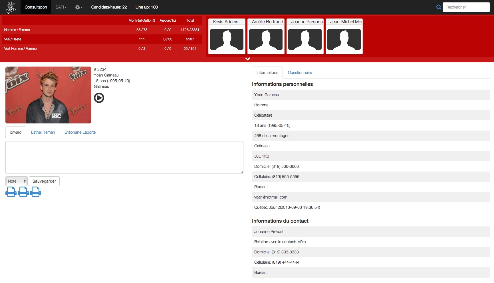

Projets
SAFI
Application web pour la gestion d'auditions utilisée pour des productions de télévision tel que La Voix, Occupation Double, Vol 920.
DétailsSPLASH
Application web qui permet de faire la gestion, la modération et la diffusion de messages venant des réseaux sociaux Facebook et Twitter utilisé pour des spectacles au Centre Bell et pour les émissions en direct de La Voix.
DétailsBillETS

L’application web billETS est une plateforme qui permet de faire l’achat de billets de spectacles par Internet. Ce projet a été développé en JEE dans le cours de Technologies de développement Internet à l’ÉTS.
Détails